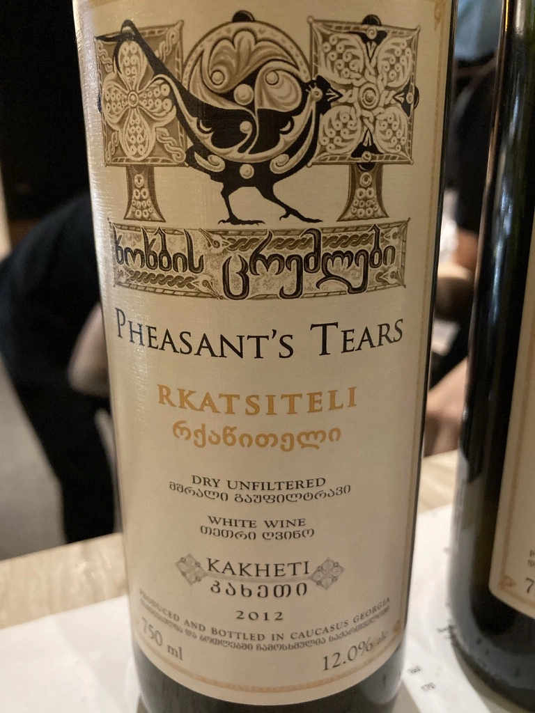

- Type
- White Still, Dry
- Producer
- Pheasant’s Tears
- Vintage
- 2012
- Location
- Georgia, Kakhetia
- Grapes
- Rkatsiteli
- Alcohol
- 12
- Sugar
- 1
- Price
- 615 UAH
- Cellar
- N/A
Ratings
2020-10-12 - 5.50
Some might think that 8 years old wine should be more calm comparing to 2 years old natural wine. This wine is different, more crazy in the aroma, but more dull in a taste. I don’t believe that it’s only 12 abv, feels much higher. Lots of VA both in aroma and in the taste. Crazy.